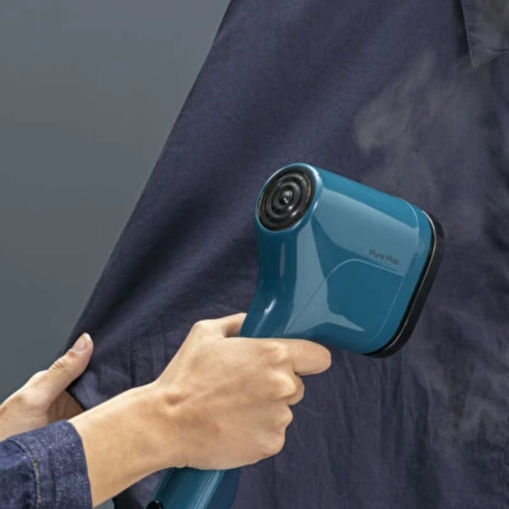
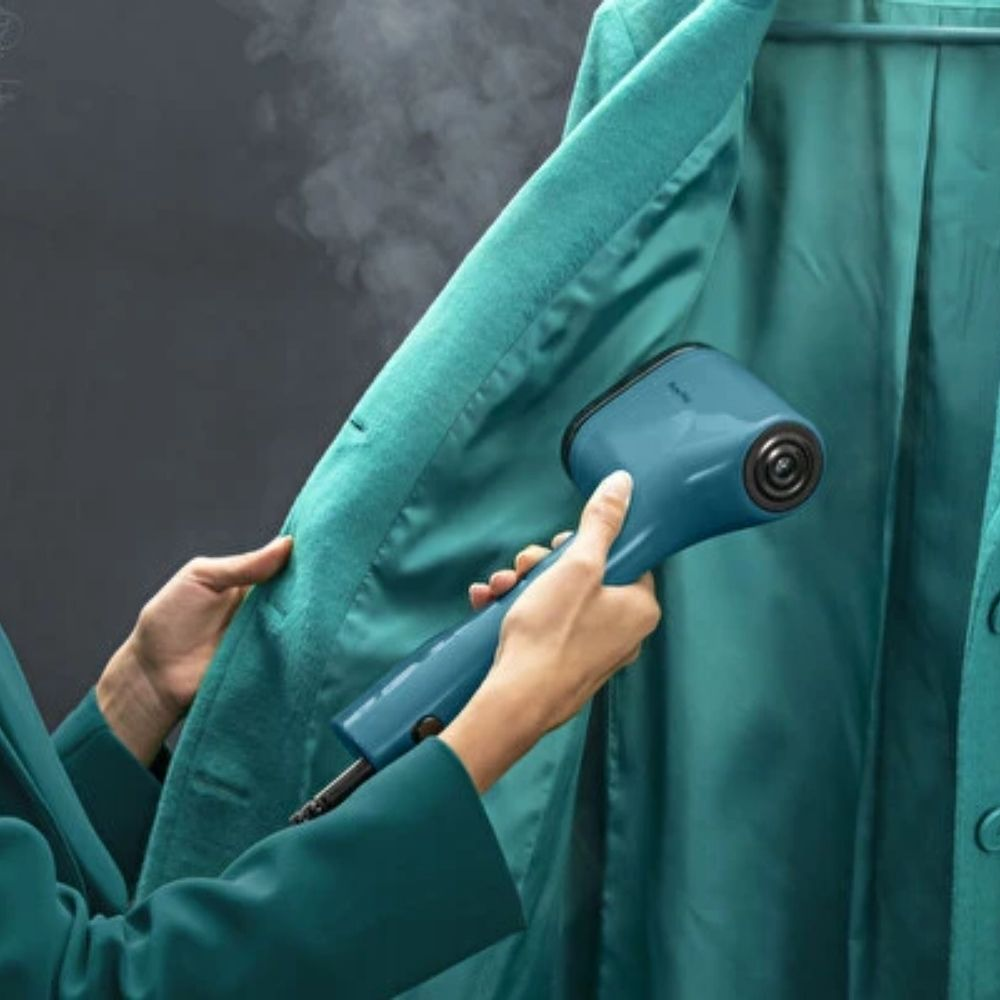
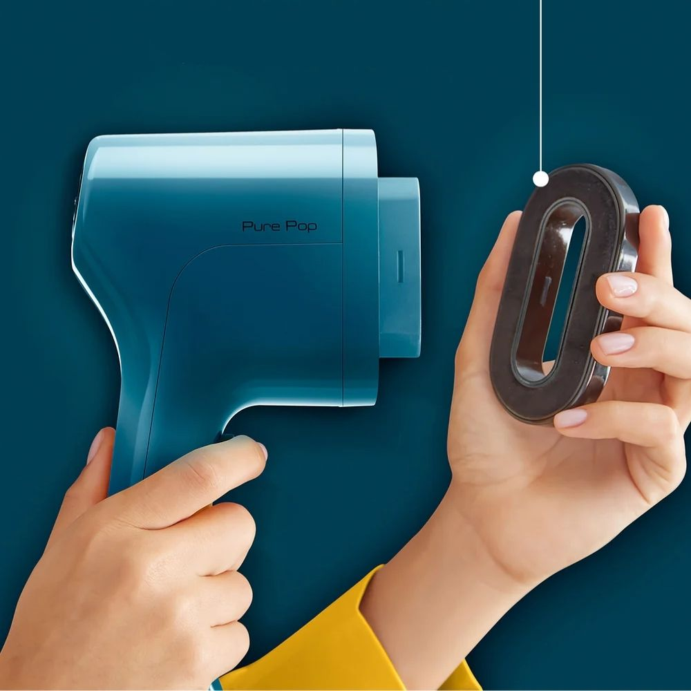
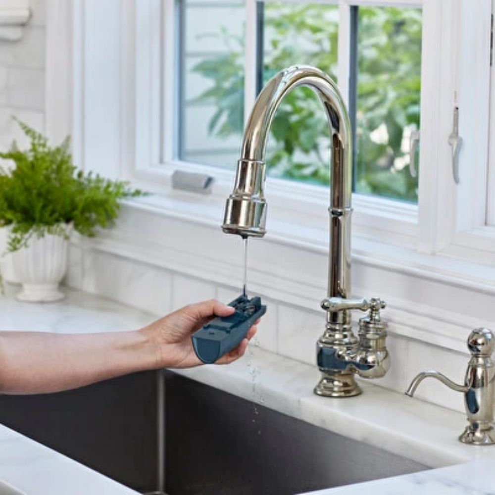
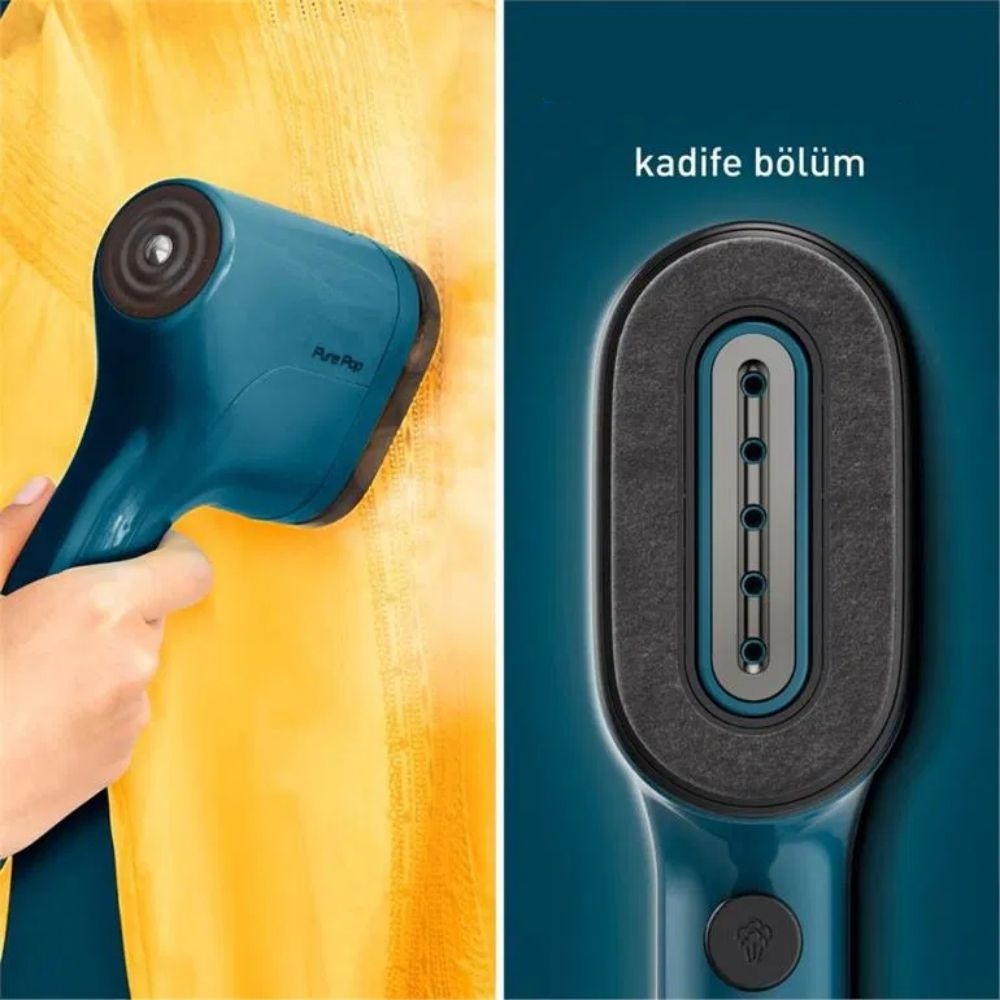
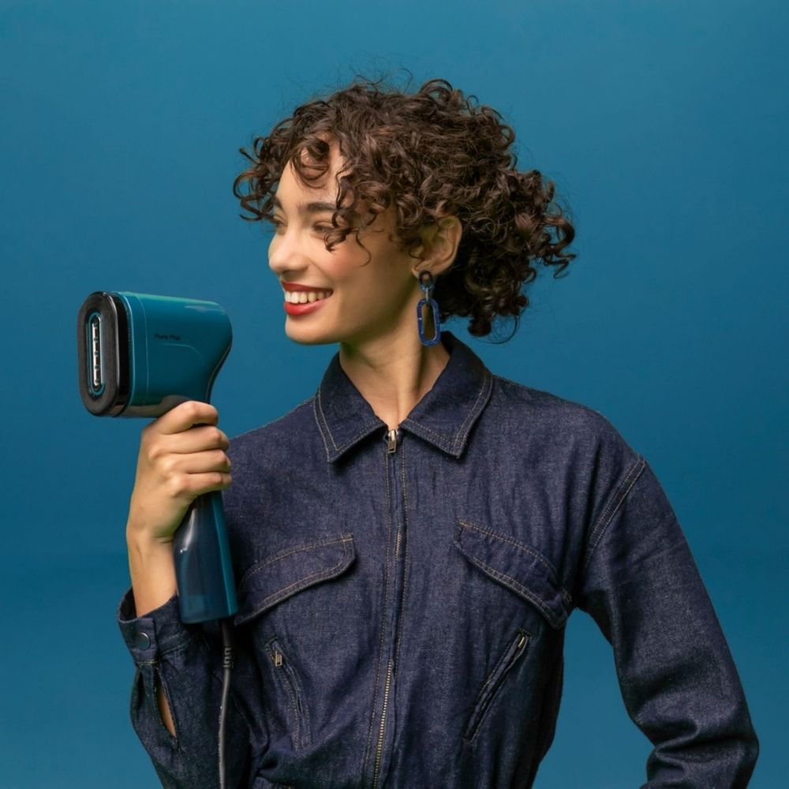
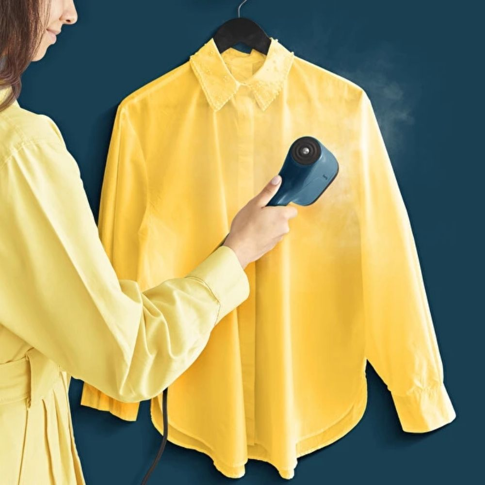
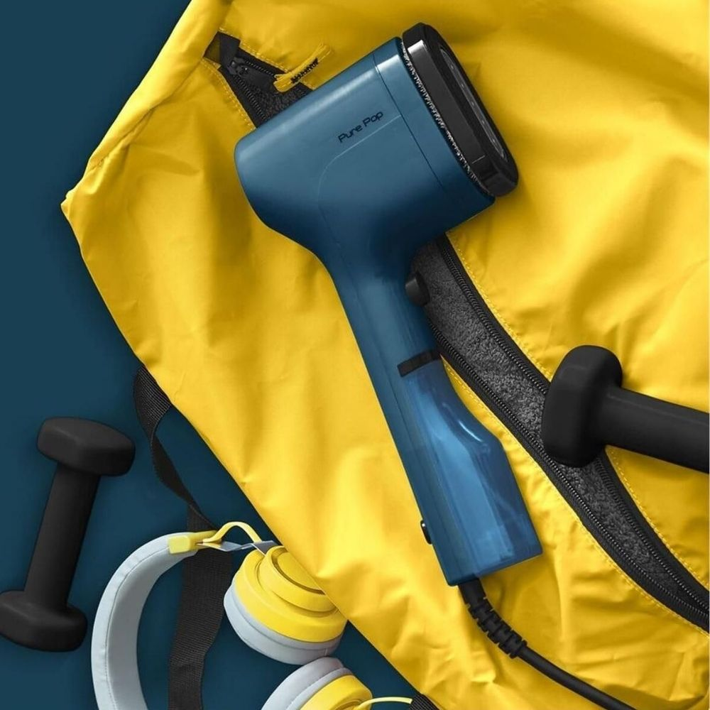
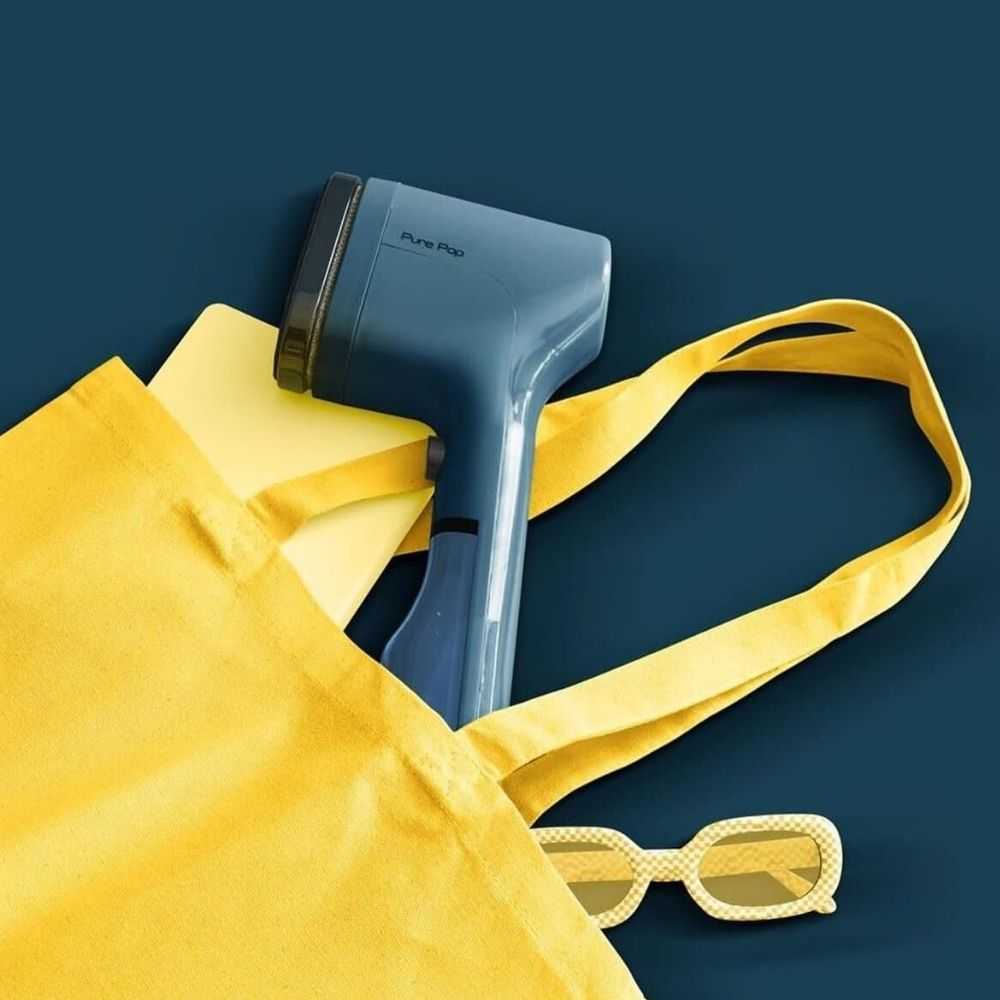

YENİ SEZGİSEL HAREKET
Ters çevirebilen pedin tüy bırakmayan tarafı, giysilerinizin tüy ve saçtan uzak durmasını sağlar.

Ters çevirebilen pedin tüy bırakmayan tarafı, giysilerinizin tüy ve saçtan uzak durmasını sağlar.

Ters çevrilebilir pedin ısıtıcı kısmı, her türlü kumaşı herhangi bir hasar riski olmadan buharda düzleştirmek için idealdir.

Yeni tasarım ped sistemi, gerçek anlamda taşınabilir giysi bakımı için kenarlar arasında zahmetsizce geçiş sağlar.

Zahmetsiz saklama ve seyahatlerde kolay kullanım için ihtiyaç duyulan her yere gidilebilirliğe uygun ultra kompakt tasarım.

15 saniyelik ışık hızında ısınma süresi, sık kullanım ve son dakika rötuşları için idealdir.

Dengeli, konforlu ve şık; dört renk seçeneğiyle göz alıcı bir ürün.

Buharın doğal gücü; virüsler, bakteriler ve mikroplara karşı etkili temizleme sağlar.

Kolay onarım için tasarlanmıştır. Dünya Çapında 6200 yetkili servis desteği.

Seyahat dostu boyut ve hafiflik ile valizinde yer kaplamaz. Hızlı çözüm garantili.